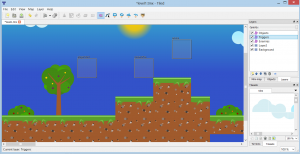
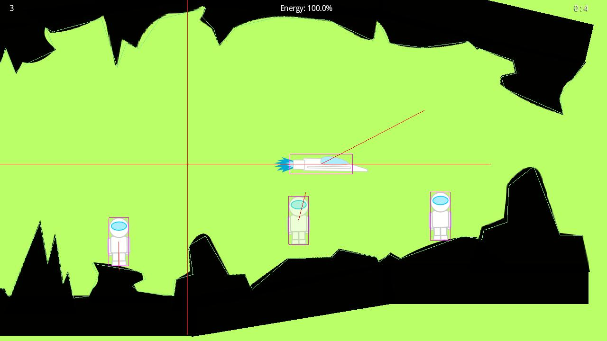
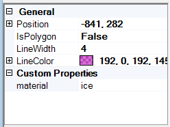

Populate your Box2D world using the libgdx maps API
Mar 9, 2013 · CommentsGames development
This text proposes an effective approach to painlessly create static collidable geometry in 2D levels with the help of Box2D and the new libgdx maps API.
All the source code is available for direct download below the post.
New libgdx maps API
The mighty libgdx library saw itself to yet another addition a couple of weeks ago, a shiny brand new maps API. Nex and me had been working on it for a while and people seem to be quite happy with it. Actually, by now, loads of folks have contributed too, which is kind of the beauty of open source, isn’t it? You might as well read the wiki page and check out the sample code, luckily enough, there’s plenty which is not always the case.
It primarily focuses on modelling how maps data is represented as well as in providing a way of easily implementing loaders and renderers for specific formats. The API comes with built in loaders and renderers for the TMX, Tide and Gleed formats. However, the latter might be deprecated at some point in the future due its absolute paths horribleness. Believe me, I’ve tried to work my way around it but there is just no elegant solution. Although there hasn’t been any releases since it’s inclusion, it’s accessible in the nightly builds. For those interested in the implementation, please go to the Github repository.

Take this cutie as an example, a minimalistic platformer using the new API in just under 300 lines.

Enjoy.
Use your level editor to place world physics geometry
Let’s say you"re working on a 2D game which mechanics require some sort of collision detection. Most likely, you"ll be leveraging an editor such as Tiled or Gleed to boost your level creation process. How are you planning to implement collision detection in a way it doesn’t become an excruciating pain in the ass to maintain? Can we also make it efficient, please?
At last! After all, this is what the article is really about.
If you"re going for tile based levels, you could add properties to the map to determine tiles walkability, a perfectly valid approach when presented with just a bunch of tiles. However, adding or changing tiles can become tedious really soon. Why don’t you take advantage of Box2D collision detection algorithms and space partitioning techniques? No worries, you could do so regardless of the need of running a real time physics simulation, just create the bodies, move them according to the game logic and query the world for intersections without stepping it. In case of dealing with a physics based game, then, by all means, make full use of Box2D.

I"m going to assume basic knowledge of this popular physics library, if you don’t consider yourself minimally familiar with it, please take some time to get the basics.
Alright, your textures are all set in your level and it looks stunningly beautiful! Sadly, you lack any kind of collision data. A good practice is to create a separate layer named “physics” or similar for sanity reasons. Now you can start placing shapes (rectangles, circles, polygons or polylines) so they adjust to the non walkable areas. Here’s an example in my WIP casual abduction game.

As you could have guessed, having thousands of shapes won’t do your game’s performance any favours. It"d be a good idea to keep the shape count under control while preserving a decent granularity. Ideally, the editor would have a “generate physics” option that would automatically create collision data from a texture layer using contour tracing. Sadly, that’s not the case in the state of the art open source software we have today.
Don’t forget to hit “save”.
Create bodies from your level data > My level has collidable static geometry data, how do I get that in my game?
To tackle that problem I implemented a simple class named MapBodyManager with the following interface.
public class MapBodyManager {
public MapBodyManager(World world, int unitsPerPixel, String materialsFile);
public void createPhysics(Map map, String layerName);
public void destroyPhysics();
}
I believe it to be simple enough but I"ll explain the details just in case. The constructor takes the Box2D world so it knows where to dump the new bodies into and where to delete them from later on. Most level editors work in pixels, while Box2D measures stuff in metres (take that imperial system!), hence the need for the unitsPerPixel conversion rate. We"ll get to the materials stuff in just a minute.
Once your level is loaded, you just need to do this.
MapBodyManager mapBodyManager = new MapBodyManager(world, 1.0f, Gdx.files.internal("data/materials.json"));
Map map = assetManager.get("data/level.xml", Map.class);
mapBodyManager.createPhysics(map, "physics");
This will automatically create a static body per shape in your “physics” layer as shown in the screenshot below.

So the player heroically beats the level and makes it to the next one. You surely will want to get rid of all those bodies (reference to murder not intended) before adding any more. Interestingly enough, our handy MapBodyManager keeps track of all registered bodies, so voilá, easy as cake.
mapBodyManager.destroyPhysics();
Material system
Those who are no strangers to Box2D will know that body’s fixtures have properties that determine how they interact with other entities. These are mainly: density, restitution and friction. Mass is usually determined by the area of the shape involved and the fixture’s density. Again, check out Box2D documentation for more details on this. We could just create all our static bodies with default properties but…
I want to have icy, sandy and elastic surfaces in my game so characters can slide, be slower and bounce!
How can our MapBodyManager deal with all this? It’s actually dead easy, I went for a very simple material system where each one of these materials are defined by a set of properties in a straightforward JSON file. Let’s say that the game world we want to model has regular, ice and elastic elements, we might be able to get away with something such as this.
[
{ "name" : "ice", "density" : 1.0, "restitution" : 0.0, "friction" : 0.1 },
{ "name" : "elastic", "density" : 1.0, "restitution" : 0.8, "friction" : 0.8 }
]
Assigning materials to elements in our editor is also fairly simple. Add a “material” custom property per shape you want to behave in a non default manner. Every editor has its own GUI element for this and all of them are almost identical.

The MapBodyManager will automatically pick up each shape’s material and create bodies with the desired properties. Adding new materials is trivial and, whilst reassigning them is not comfortable, it’s not a deal breaker either.
This makes you happy, doesn’t it?
Yay! ### Source code
Did you read this all or did you just scrolled down after realising you could download the source at the end? If you belong to the first group, I have to say you"re awesome and deserve my most sincere admiration.
Nevertheless, you"ll be very disappointed to see there’s no arcane magic going on behind the scenes as the implementation is not shocking in any way. Here it goes for those who are bored enough and wouldn’t mind to procrastinate some more by reading a piece useless code.
As promised.
To be honest, I’ve only tested this with Gleed created maps and I don’t intend to maintain this utility class any further than what I deem necessary to carry on with my projects. The API is homogeneous and should be fully compatible with Tiled and Tide as it is. Worst case scenario, if you bump into problems, the fixes are likely to be simple. Obviously, you"re not forced to use it, feel free to mimic the approach and pick ideas from it, you"ll probably come up with something better after some thought.
- Edit 1: updated the code to support latest Libgdx API and fixed bugs.
- Edit 2: changed materials file format from XML to JSON.